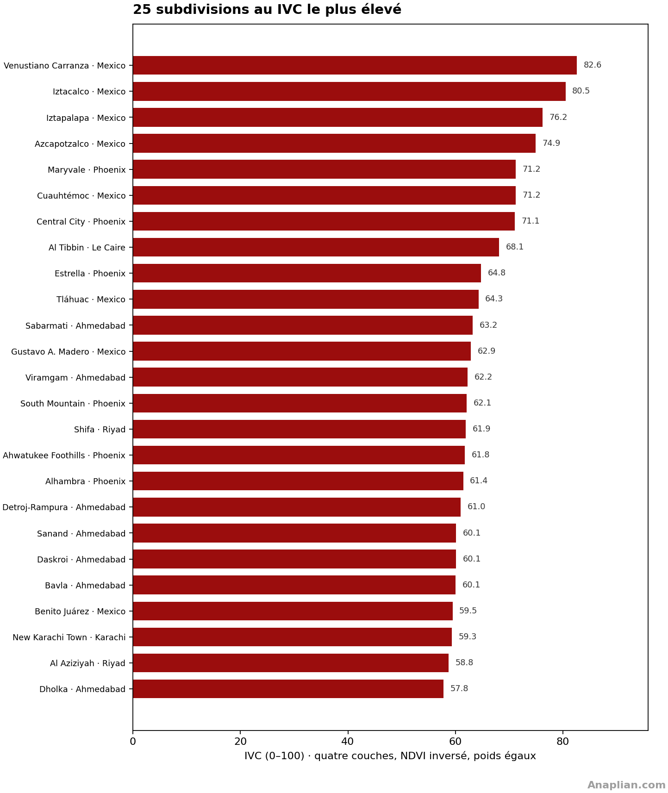
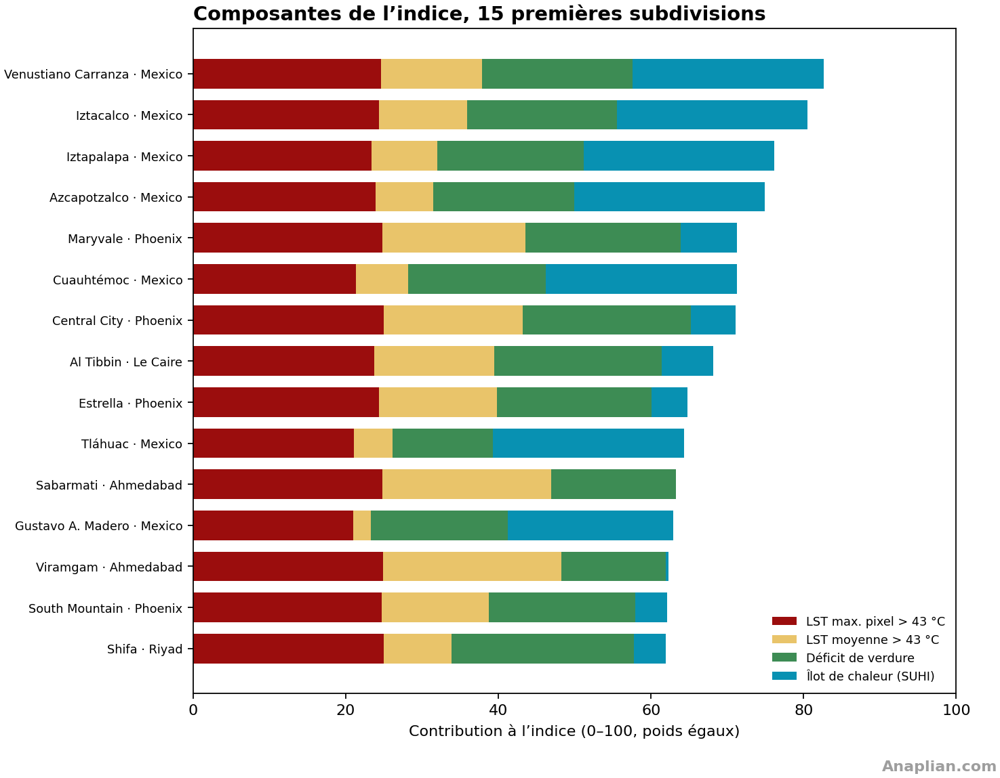
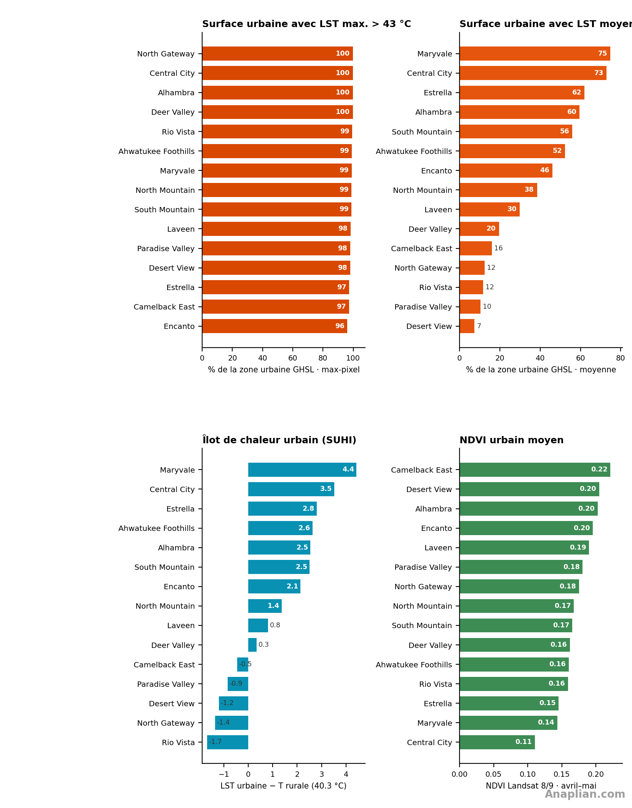

1. Introduction
La hausse soutenue de la température moyenne et de sa variabilité — plus de jours extrêmes, des vagues plus longues — pèse sur les peuplements humains. Le corps dissipe la chaleur par rayonnement, convection et surtout évaporation de la sueur. Quand l’air et les surfaces qui rayonnent empêchent cette perte, la température corporelle monte, le cœur travaille plus pour envoyer le sang vers la peau, eau et électrolytes se perdent. L’issue peut être l’épuisement, le coup de chaleur ou une décompensation cardiovasculaire et rénale. La chaleur nocturne, typique des îlots urbains, réduit la récupération du sommeil. Le risque est plus élevé chez les personnes âgées, malades chroniques, travailleurs en extérieur et habitants de logements mal ventilés ou sans ombre.
Le but de cet indice est de quantifier cette charge de chaleur de surface et de la rendre comparable, pour voir où se concentre la vulnérabilité et quels traits urbains la favorisent : revêtement, hangars, déficit de verdure et îlots de chaleur par rapport à l’environnement. Il ne remplace ni la démographie ni la surveillance épidémiologique ; il ordonne le territoire selon l’exposition de surface, avec une métrique fixe d’une ville à l’autre.
La comparaison opère à deux échelles. Entre villes, un même nombre dimensionne le problème face à d’autres qui appliquent déjà de bonnes pratiques ou illustrent des solutions à la concentration de chaleur. Dans chaque ville, les divisions politico-administratives — à Phoenix, les villages urbains — localisent plus finement les zones problématiques et désignent autorités et population directement concernées.
Par disponibilité des données et comparabilité, nous retenons quatre couches Landsat. Trois sont de température de surface : le maximum de la période, la moyenne des observations et l’îlot de chaleur, le différentiel entre une zone de référence proche, rurale ou moins urbanisée, et la température de la zone. La quatrième est un indice de végétation (NDVI) qui entre inversé : on pénalise un verdissement plus faible, parce que la végétation a un effet de refroidissement net.
2. Position dans l’indice
Phoenix occupe la 2e place sur 18 villes mesurées en avril et mai 2026, avec un indice de vulnérabilité climatique (IVC) de 55.4 sur 100. Ahmedabad arrive en tête. Mexico (54.1) suit. Presque tout le max-pixel urbain dépasse 43 °C (99 %) ; la moyenne du composite le fait sur 39 % du sol urbain. Le désert rural est déjà à environ 40 °C, donc le SUHI urbain n’est que de +1.3 °C. Ce qui distingue Phoenix, c’est le revêtement et le déficit de verdure sur un désert chaud, pas un îlot type Mexico sur une forêt fraîche.

Dans la ville, l’indice se concentre à l’ouest et dans le noyau. Maryvale arrive en tête (IVC 71) : artères, parkings et toits bas. Central City (71) ajoute le centre, les entrepôts et la lisière de Sky Harbor (NDVI 0,11). Estrella (65) est l’étalement neuf sur désert raclé. South Mountain (62) mélange la réserve et les piémonts pavés. Ahwatukee Foothills (62) ce sont toits de tuiles planifiés. Desert View arrive dernière (44), sur la frange de conservation nord.
Les villages de l’ouest (Maryvale, Central City) allient dalle, parkings et presque pas de canopée ; la LST moyenne dépasse encore 43 °C sur la plus grande part du masque urbain. Au nord (Desert View, North Gateway, Paradise Valley) le max-pixel reste haut — toits de désert en avril — mais la moyenne baisse avec la densité et l’asphalte.
Contrairement à Mexico, Phoenix ne s’appuie pas sur une référence rurale fraîche (~40 °C). Contrairement à Ahmedabad, la moyenne n’est pas déjà saturée à 89 %. Le dessin urbain déplace encore la moyenne : ombre, albédo et moins de parking séparent Maryvale de Desert View. Desert View montre le plancher du classement de la ville.
La couverture du sol dans les cinq villages urbains au plus fort IVC, c’est asphalte, parkings, toits bas et dalle d’aéroport ou d’artère, avec peu de verdure. Maryvale, ce sont parkings de strip-mall et routes à six voies. Central City ajoute dalles du centre et pistes de Sky Harbor. Estrella, c’est le revêtement neuf sur désert. Le score urbain de South Mountain est sur les piémonts asphaltés, pas sur la réserve. Ahwatukee Foothills, toits de tuiles et artères sur lots désertiques. La canopée est fragmentée ; elle ne compense pas la dalle.
3. Subdivisions à l’IVC le plus élevé
Parmi les 296 subdivisions politiques des 18 villes de l’indice comparable, 6 villages urbains de Phoenix entrent dans le top 25 : Maryvale (5e, IVC 71), Central City (7e, IVC 71), Estrella (9e, IVC 65), South Mountain (14e, IVC 62), Ahwatukee Foothills (16e, IVC 62), Alhambra (17e, IVC 61). Maryvale est 5e au général, entre Azcapotzalco et Cuauhtémoc. Le graphique des composantes montre un z_LST max. et un déficit de verdure élevés, avec un SUHI modeste : revêtement de désert, pas un îlot de 13 °C. Desert View (44) reste hors du top 25.


4. Quatre méthodes
Métrique comparable ivc-l4-v1. IVC = 100 × moyenne de zmax, zmoy, zNDVI inv et zSUHI. Ville : IVC 55.4 · SUHI 1.3 °C · T rurale 40.3 °C · 24 scènes · 9.4 obs./pixel · ~11 h 05 heure locale (18 h 05 UTC).
1. LST maximale par pixel
Température de surface maximale. Landsat 8 et 9 Collection 2 niveau 2, bande 10 (ST_B10), 1er avril–31 mai 2026. 24 scènes ; survol ~11 h 05 heure locale (18 h 05 UTC). Masque par pixel du remplissage, des nuages, des ombres et des LST hors 0–80 °C. LST = 0,00341802×DN + 149 − 273,15. Maximum des observations valides (9.4 obs./pixel). Superposition et indice : fraction urbaine > 43 °C.
2. LST moyenne des observations
Température de surface moyenne des observations. Même collection et même masque. Moyenne des scènes valides. La carte colore à partir de 35 °C ; l’indice utilise la fraction urbaine > 43 °C.
3. Végétation (NDVI)
Végétation. NDVI = (PIR − rouge)/(PIR + rouge), SR_B5 et SR_B4. Moyenne de la période (24 scènes, ~11 h 05 heure locale (18 h 05 UTC)). Verdure urbaine : NDVI ≥ 0.30 dans GHSL SMOD ≥ 21. Dans l’indice, il entre inversé sur une échelle fixe 0.05–0.55.
4. Îlot de chaleur (SUHI)
Îlot de chaleur de surface. SUHI = LST moyenne du pixel − T rurale. T rurale = 40.3 °C, GHSL 2020 SMOD 11–13 à l’intérieur du polygone (526 km² ruraux). Superposition : SUHI > 8 °C. z_SUHI = min(max(SUHI urbain, 0) / 15, 1).
5. Température de surface maximale par pixel (> 43 °C)

6. Température de surface, moyenne des observations (> 35 °C)

7. Végétation (NDVI)

8. Îlot de chaleur (pixel − rural)

9. Quatre éléments du sous-indice

Superficie 1440 km² · urbaine GHSL 913 km² (63 %) · LST max. > 43 °C : 99 % · LST moyenne > 43 °C : 39 % · SUHI urbain 1.3 °C · verdure 10 % · IVC ville 55.4.
10. Tableau des villages urbains
| # | Village urbain | IVC | LST max. > 43 °C | LST moyenne > 43 °C | SUHI °C | NDVI urbain | Verdure | Obs./pixel |
|---|---|---|---|---|---|---|---|---|
| 1 | Maryvale | 71.2 | 99% | 75% | 4.4 | 0.14 | 5% | 6.5 |
| 2 | Central City | 71.1 | 100% | 73% | 3.5 | 0.11 | 3% | 7.0 |
| 3 | Estrella | 64.8 | 97% | 62% | 2.8 | 0.15 | 9% | 6.4 |
| 4 | South Mountain | 62.1 | 99% | 56% | 2.5 | 0.17 | 9% | 7.7 |
| 5 | Ahwatukee Foothills | 61.8 | 99% | 52% | 2.6 | 0.16 | 5% | 9.8 |
| 6 | Alhambra | 61.4 | 100% | 60% | 2.5 | 0.20 | 20% | 6.9 |
| 7 | Encanto | 56.9 | 96% | 46% | 2.1 | 0.20 | 15% | 7.0 |
| 8 | North Mountain | 55.7 | 99% | 38% | 1.4 | 0.17 | 8% | 6.8 |
| 9 | Laveen | 51.4 | 98% | 30% | 0.8 | 0.19 | 15% | 6.8 |
| 10 | Deer Valley | 49.8 | 100% | 20% | 0.3 | 0.16 | 6% | 9.4 |
| 11 | Rio Vista | 47.3 | 99% | 12% | -1.7 | 0.16 | 3% | 13.4 |
| 12 | North Gateway | 46.8 | 100% | 12% | -1.4 | 0.18 | 5% | 13.5 |
| 13 | Paradise Valley | 45.6 | 98% | 10% | -0.9 | 0.18 | 8% | 8.0 |
| 14 | Camelback East | 44.7 | 97% | 16% | -0.5 | 0.22 | 24% | 8.5 |
| 15 | Desert View | 43.6 | 98% | 7% | -1.2 | 0.20 | 10% | 13.4 |
11. Villages urbains
1. Maryvale
Le village urbain le plus vulnérable (IVC 71). Artères, parkings et toits bas à l’ouest ; NDVI 0,14, 75 % de la moyenne urbaine > 43 °C. Dalle sur désert, pas un différentiel type Mexico.
- IVC ivc-l4-v1 71.2 / 100
- LST max. > 43 °C 99% urbain · 52.6 °C
- LST moyenne > 43 °C 75% urbain · 44.8 °C
- SUHI urbain 4.4 °C vs T rurale 40.3 °C
- NDVI urbain 0.14 · 5% · 81.4 km² (97%) · 6.5
À l’ouest : artères à six voies, parkings de strip-mall et toits bas. Presque pas de canopée ; asphalte et dalle expliquent 75 % de moyenne > 43 °C.


2. Central City
Noyau et entrepôts (IVC 71). NDVI urbain le plus bas de Phoenix (0,11) : parkings, viaducs et lisière de l’aéroport Sky Harbor. 100 % du max-pixel et 73 % de la moyenne > 43 °C.
- IVC ivc-l4-v1 71.1 / 100
- LST max. > 43 °C 100% urbain · 51.7 °C
- LST moyenne > 43 °C 73% urbain · 43.9 °C
- SUHI urbain 3.5 °C vs T rurale 40.3 °C
- NDVI urbain 0.11 · 3% · 39.6 km² (72%) · 7.0
Dans le noyau : centre, entrepôts et lisière de Sky Harbor. Pistes, aires et parkings remplacent la végétation ; le NDVI 0,11 est le plancher de la ville.


3. Estrella
Expansion sud-ouest (IVC 65). Lotissements neufs sur désert : asphalte frais, toits et peu d’arbres (NDVI 0,15). 62 % de la moyenne urbaine franchit déjà 43 °C.
- IVC ivc-l4-v1 64.8 / 100
- LST max. > 43 °C 97% urbain · 51.2 °C
- LST moyenne > 43 °C 62% urbain · 43.2 °C
- SUHI urbain 2.8 °C vs T rurale 40.3 °C
- NDVI urbain 0.15 · 9% · 76.1 km² (71%) · 6.4
Dans l’expansion sud-ouest : rues neuves, toits et désert raclé. L’asphalte frais sur sol nu pousse la moyenne à 62 % au-dessus de 43 °C.


4. South Mountain
Réserve face aux piémonts pavés (IVC 62). South Mountain Preserve n’entre pas dans l’indice urbain ; le GHSL ≥ 21 est sur les pentes asphaltées, 56 % de moyenne > 43 °C.
- IVC ivc-l4-v1 62.1 / 100
- LST max. > 43 °C 99% urbain · 50.8 °C
- LST moyenne > 43 °C 56% urbain · 42.9 °C
- SUHI urbain 2.5 °C vs T rurale 40.3 °C
- NDVI urbain 0.17 · 9% · 77.5 km² (75%) · 7.7
Sur les piémonts : la réserve est verte ; l’indice regarde le GHSL de versant — maisons, artère et parking — pas la montagne.


5. Ahwatukee Foothills
Lotissement planifié (IVC 62). Toits de tuiles, artères et lots désertiques ; 99 % du max-pixel > 43 °C et la moyenne encore à 52 %.
- IVC ivc-l4-v1 61.8 / 100
- LST max. > 43 °C 99% urbain · 50.5 °C
- LST moyenne > 43 °C 52% urbain · 43.0 °C
- SUHI urbain 2.6 °C vs T rurale 40.3 °C
- NDVI urbain 0.16 · 5% · 60.5 km² (65%) · 9.8
Dans le lotissement : tuile, artère et lot désertique. Peu d’ombre de rue ; les max de toiture franchissent 43 °C sur 99 % du sol urbain.


6. Alhambra
Couloir I-17 (IVC 61). Dalles commerciales, asphalte et 60 % de moyenne urbaine > 43 °C. Un peu plus de verdure que Maryvale (NDVI 0,20), pas assez pour baisser le max.
- IVC ivc-l4-v1 61.4 / 100
- LST max. > 43 °C 100% urbain · 50.7 °C
- LST moyenne > 43 °C 60% urbain · 42.9 °C
- SUHI urbain 2.5 °C vs T rurale 40.3 °C
- NDVI urbain 0.20 · 20% · 49.8 km² (100%) · 6.9
Le long de l’I-17 : dalles commerciales, stations et asphalte d’accès. Une canopée fragmentée ne coupe pas les 60 % de moyenne au-dessus de 43 °C.


7. Encanto
Trame ancienne (IVC 57). Plus d’arbres que l’ouest ; 46 % de moyenne > 43 °C. Le max-pixel reste à 96 % : pic de toiture dans un quartier un peu canopé.
- IVC ivc-l4-v1 56.9 / 100
- LST max. > 43 °C 96% urbain · 50.3 °C
- LST moyenne > 43 °C 46% urbain · 42.5 °C
- SUHI urbain 2.1 °C vs T rurale 40.3 °C
- NDVI urbain 0.20 · 15% · 27.1 km² (100%) · 7.0
Sur la trame ancienne : plus d’arbres que Maryvale, encore 96 % de max-pixel > 43 °C. La canopée baisse la moyenne, pas le pic de toiture.


8. North Mountain
Nord mixte (IVC 56). 99 % du max-pixel > 43 °C, mais la moyenne tombe à 38 % : moins de charge continue que Maryvale, même dalle de midi.
- IVC ivc-l4-v1 55.7 / 100
- LST max. > 43 °C 99% urbain · 50.4 °C
- LST moyenne > 43 °C 38% urbain · 41.7 °C
- SUHI urbain 1.4 °C vs T rurale 40.3 °C
- NDVI urbain 0.17 · 8% · 89.0 km² (99%) · 6.8
Dans le nord mixte : artère et toit ; la moyenne (38 %) n’est plus la charge continue de Maryvale, le maximum sature encore.


9. Laveen
Conversion agricole (IVC 51). Champs qui deviennent rue et toit ; 30 % de moyenne urbaine > 43 °C. L’indice pèse le nouveau GHSL, pas la parcelle restante.
- IVC ivc-l4-v1 51.4 / 100
- LST max. > 43 °C 98% urbain · 50.7 °C
- LST moyenne > 43 °C 30% urbain · 41.2 °C
- SUHI urbain 0.8 °C vs T rurale 40.3 °C
- NDVI urbain 0.19 · 15% · 39.4 km² (50%) · 6.8
Sur la conversion : parcelle agricole contre rue neuve. L’indice prend l’asphalte récent, pas le champ restant.


10. Deer Valley
Expansion nord (IVC 50). Presque tout le max-pixel > 43 °C ; la moyenne seulement 20 %. Pic de toiture dans un village plus ouvert, près de l’aéroport nord.
- IVC ivc-l4-v1 49.8 / 100
- LST max. > 43 °C 100% urbain · 50.6 °C
- LST moyenne > 43 °C 20% urbain · 40.7 °C
- SUHI urbain 0.3 °C vs T rurale 40.3 °C
- NDVI urbain 0.16 · 6% · 107.9 km² (74%) · 9.4
Au nord : aéroport et expansion. Beaucoup de max de toiture, peu de moyenne continue : le sol n’est pas encore une dalle de midi.


11. Rio Vista
Canal et désert (IVC 47). SUHI négatif : le rural du polygone chauffe déjà. 12 % de moyenne > 43 °C ; le max-pixel sature encore.
- IVC ivc-l4-v1 47.3 / 100
- LST max. > 43 °C 99% urbain · 51.2 °C
- LST moyenne > 43 °C 12% urbain · 38.7 °C
- SUHI urbain -1.7 °C vs T rurale 40.3 °C
- NDVI urbain 0.16 · 3% · 5.0 km² (5%) · 13.4
Près du canal : eau agricole et toit. Le rural du polygone chauffe ; le SUHI négatif dit que la référence n’est pas fraîche.


12. North Gateway
Désert planifié du nord (IVC 47). SUHI −1,4 °C ; 12 % de moyenne > 43 °C. Le contraste de Phoenix : moins de dalle continue, même toit d’avril au soleil.
- IVC ivc-l4-v1 46.8 / 100
- LST max. > 43 °C 100% urbain · 50.5 °C
- LST moyenne > 43 °C 12% urbain · 39.0 °C
- SUHI urbain -1.4 °C vs T rurale 40.3 °C
- NDVI urbain 0.18 · 5% · 19.8 km² (17%) · 13.5
Sur le désert planifié : faible densité, moins de dalle. 12 % de moyenne > 43 °C est le contraste avec Maryvale, pas une forêt.


13. Paradise Valley
Lots plus grands (IVC 46). Un peu plus de canopée ; 10 % de moyenne > 43 °C. Le max-pixel (98 %) montre que la tuile franchit encore le seuil.
- IVC ivc-l4-v1 45.6 / 100
- LST max. > 43 °C 98% urbain · 49.2 °C
- LST moyenne > 43 °C 10% urbain · 39.5 °C
- SUHI urbain -0.9 °C vs T rurale 40.3 °C
- NDVI urbain 0.18 · 8% · 105.0 km² (94%) · 8.0
Sur grands lots : relativement plus de jardin ; le toit franchit encore 43 °C. La moyenne (10 %) baisse faute d’asphalte continu.


14. Camelback East
Camelback et avenues (IVC 45). NDVI 0,22, le plus haut du noyau est ; 16 % de moyenne > 43 °C. Resorts et artère : ombre fragmentée sur asphalte.
- IVC ivc-l4-v1 44.7 / 100
- LST max. > 43 °C 97% urbain · 49.1 °C
- LST moyenne > 43 °C 16% urbain · 39.9 °C
- SUHI urbain -0.5 °C vs T rurale 40.3 °C
- NDVI urbain 0.22 · 24% · 83.3 km² (89%) · 8.5
Sous Camelback : resorts, avenue et canopée irrégulière. La verdure 0,22 est le haut de l’est ; l’asphalte du couloir reste chaud.


15. Desert View
Le moins vulnérable (IVC 44). Conservation nord et faible densité ; seulement 7 % de moyenne urbaine > 43 °C. Le max-pixel reste à 98 % : le désert ne pardonne pas le toit, il pardonne la moyenne.
- IVC ivc-l4-v1 43.6 / 100
- LST max. > 43 °C 98% urbain · 48.8 °C
- LST moyenne > 43 °C 7% urbain · 39.1 °C
- SUHI urbain -1.2 °C vs T rurale 40.3 °C
- NDVI urbain 0.20 · 10% · 51.7 km² (29%) · 13.4
Sur la conservation nord : faible densité et 7 % de moyenne > 43 °C. Le toit d’avril reste rouge au max-pixel ; plus à la moyenne.


12. Pourquoi Phoenix est en Priorité 2
La Priorité 2 suit le même découpage — plus de deux millions d’habitants en 18–42 °N — et le même cadre danger × exposition × vulnérabilité, un cran sous les six villes de tête. Elle ne remplace pas Delhi ou Karachi : elle les complète. Lahore, Dhaka et Ahmedabad concentrent la croissance des personne-jours de chaleur extrême en Asie du Sud (Tuholske 2021) ; Phoenix est la référence ECOSTRESS des brûlures sur chaussée (49–60 °C) déjà utilisée dans le style cartographique du projet ; Téhéran apporte une mégapole semi-aride en bassin fermé ; Monterrey est le pendant sec-industriel de Mexico.
La métrique est la même ivc-l4-v1 et la fenêtre reste avril–mai 2026, pour qu’un IVC 60 dans un town de Lahore soit comparable à Iztapalapa ou à un urban village de Phoenix. À Lahore, Ahmedabad et Dhaka cette fenêtre est pré-mousson ou saison chaude. À Phoenix et Monterrey le maximum annuel est juin–août ; elles entrent au printemps à dessein pour ne pas casser l’échelle fixe. Ahmedabad a en outre un plan d’action chaleur pionnier en Inde : l’indice mesure l’exposition de surface, pas le succès du plan.
Phoenix est le référent de chaleur de chaussée en désert : LST urbaine de 49–60 °C dans le noyau, avec peu de canopée. Les 15 villages urbains de la ville permettent de voir si le noyau (Central City, Maryvale) chauffe plus que le désert planifié du nord (Desert View, North Gateway). Avril–mai n’est pas le pic de juillet ; la ville entre pour ancrer l’échelle.